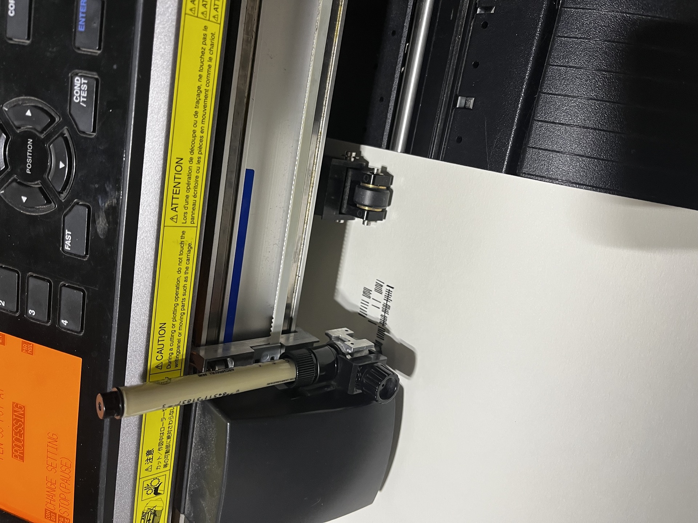

A digital file is perfect, weightless, and infinitely replicable. Physical artwork is none of those things. The second you introduce an incredibly sharp fountain pen loaded with liquid ink to a sheet of dense cotton, you introduce physics to perfection. The result is where the magic lies.
Finding the right combination of materials took months of expensive trial and error. I knew from the onset that creating archival art meant avoiding standard printer paper or cheap ballpoints. If I am mapping out the timeline of a legendary human being, the paper itself needs to hold a specific gravitas.

I settled exclusively on 300gsm acid-free cotton rag. It's thick, highly textured, and incredibly thirsty. When the plotter drops the 0.1mm technical pen onto it, the ink is absorbed aggressively, creating a distinct micro-bleed that softens the digital sterility of the vector path.
Paired with a lightfast carbon-based pigment ink (specifically formulated to resist UV decay), the result is an object designed to outlive the person who plotted it. The tactility is undeniable; run your hand across it lightly, and you can feel the slight indentations of over 29,000 distinct pen strokes.